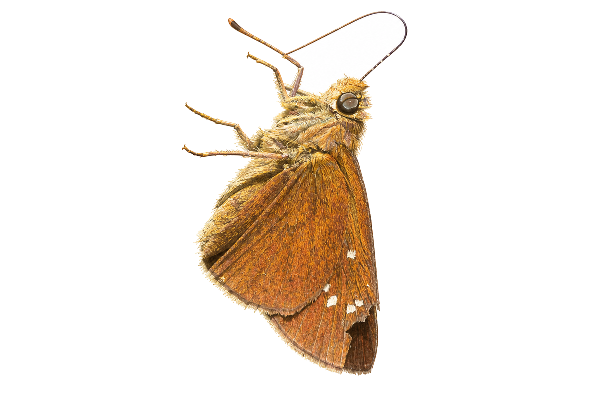

セセリチョウ科 · 162 / 165
アトムモンセセリ
Caltoris cahira

特徴・見分け方
暗褐色のセセリ。近縁のムモンセセリ類と酷似し、白斑の有無だけでは確実に識別できない。
雌雄の違い
一般的な生態写真だけで確実に分かる顕著な雌雄差は未確認。
大きさ
開張38～40mm。
沖縄の島別記録
今回確認した地域図鑑では沖縄の島別記録を確認できなかった。日本の形態資料には東京都の迷蝶記録が紹介される。
生息環境
海外の形態資料では薄暗い場所や曇天時の活動が紹介される。沖縄の好適地の裏付けではない。
生態・識別上の補足
指定リストに従って収録したが「沖縄で確認済み」とは扱わない。近縁種との誤同定や分類整理に注意。
幼虫・食草
台湾の研究資料ではニイタカヤダケ、ダイフクチク、ヒナヨシなどが食草として挙がる。沖縄での幼虫記録ではない。
参照元・参考資料
- 日本の蝶：形態・雌雄差
資料内の参照日: 2026-11-10 - やどりが251号：台湾産セセリの食草と識別
資料内の参照日: 2026-11-10 - 東京大学総合研究博物館：台湾産標本
資料内の参照日: 2026-11-10
掲載内容は提供データ（2026年11月10日更新）に基づきます。記録島は現在の定着や観察の容易さを保証しません。イラストは参考表現で、同定には実物の形態と参照資料を併せて確認してください。